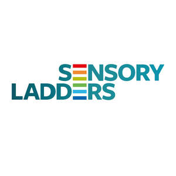

Trade Mark Journal No.2025/010 7 March 2025
UK00004165790 26 February 2025 (9,10,16,41,42,44)

- Class 9
- Digital book readers; Downloadable series of children’s books; Audio books; Talking books; Mobile apps; Mobile application software; Application software for mobile phones; Downloadable smart phone application software; Smartphone software; Application software for mobile devices; Smartphone software applications, downloadable; Downloadable application software for smart phones; Computer application software for mobile phones; Downloadable smart phone applications (software); Downloadable software in the nature of a mobile application; Mobile software; Downloadable software applications for mobile phones; Application software for smart phones; Downloadable computer software for use as an application programming interface (API); Software for mobile device management; Mobile device management software; Software for mobile phones; Downloadable mobile applications; Downloadable emoticons for mobile phones; Software applications for mobile devices; Downloadable applications for use with mobile devices; Downloadable applications for mobile devices; Software and applications for mobile devices; Web application software; Downloadable application software; Application software; Computer software for mobile applications that enable interaction and interface between vehicles and mobile devices; Software for online messaging; Downloadable graphics for mobile phones; Web application and server software; Computer software for mobile phones; Downloadable mobile applications for the management of data; Educational mobile applications; Software for smartphones; Computer application software; Educational tablet applications; Digital dashboard software; Application development software; Computer application software for use with wearable computer devices; Downloadable application software for virtual environments; Application suites [software]; Assistive software; Handheld communication devices; Software applications for use with mobile devices; Digital sensory devices; Personnel tracking devices; Education software.
- Class 10
- Assistive devices adapted for the disabled; Therapeutic and assistive devices adapted for the disabled; Medical apparatus and devices; Physical therapy devices.
- Class 16
- Non-fiction books; Series of non-fiction books; Books; Guide books; Recipe books; Sketch books; Picture books; Poster books; Printed books; Coloring books; Cookery books; Note books; Gift books; Wirebound books; Flip books; Colouring books; Drawing books; Sticker books; Blank journal books; Pop-up books; Scrap books; Agenda books; Cook books.
- Class 41
- Educational research; Research in the field of education; Book publishing; Book and review publishing; Publication of books; Books (Publication of -); Publication of text books; Publication of books, reviews; Publishing of books; Publishing of books and reviews; Publication of audio books; Publication of educational books; Publishing of instructional books; Online publication of electronic books and journals; Publication of electronic books and journals online; Multimedia publishing of books; Education; Vocational education; Health education; Pre-school education; Education and training; Academies [education]; Education and instruction; Education services; Services of schools [education]; University education services; Academy services (Education -); Education academy services; Academy education services; Education, teaching and training; Vocational education and training services; Education and instruction services; Training and education services; Education and training services; Education examination; Kindergarten services [education or entertainment]; Educational services for providing courses of education; Provision of education courses; Teaching of diet education; Provision of training and education; Provision of education and training; Providing of education; Physical education; Entertainment, education and instruction services; Medical education services; Education information; Information (Education -); Primary education services; Adult education services; Education and training consultancy; Primary education services relating to literacy; Further education; Online education services; Education services relating to nutrition; Educational services provided by institutes of higher education; Education information services; Education and training in the field of occupational health and safety; Vocational guidance [education or training advice]; Education services relating to medicine; Educational and teaching services; Vocational education for young people; Education in the field of occupational health and safety.
- Class 42
- Research (Scientific -); Scientific research; Biological research, clinical research and medical research; Scientific research and development; Clinical research; Medical research; Scientific research services; Consultancy in the field of scientific research; Research relating to science; Scientific research in the field of social medicine; Research relating to medicine; Smartphone software design; Design and development of software in the field of mobile applications.
- Class 44
- Occupational therapy; Physical therapy; Therapy (Physical -); Therapy services; Speech therapy; Art therapy; Dance therapy; Occupational therapy services; Physical therapy services; Psychological therapy for infants; Psychotherapy; Speech and hearing therapy; Therapeutic treatment of the body; Psychological treatment; Psychotherapy services; Medical services in the field of treatment of chronic pain; Physiotherapy; Psychological counseling.
Kath Smith